أفضل ما في العالمين: دمج التصنيع المقسّم والتمويه ضمن تدفق CAD موجَّه بالأمن للدوائر المتكاملة 3D
الملخص
مع عولمة التصنيع وسلاسل الإمداد، أصبح ضمان أمن الدوائر المتكاملة وموثوقيتها تحديا ملحا. ويمثل كل من التصنيع المقسّم (SM) وتمويه المخطط الفيزيائي (LC) تقنيتين واعدتين لحماية الملكية الفكرية (IP) للدوائر المتكاملة من الكيانات الخبيثة أثناء التصنيع وبعده (أي من المسابك غير الموثوقة ومن الهندسة العكسية التي يجريها المستخدمون النهائيون). في هذه الورقة، نسعى إلى تحقيق “أفضل ما في العالمين”، أي أفضل ما في SM وLC. ولتحقيق ذلك، نمدد التقنيتين كلتيهما نحو التكامل 3D، وهو نموذج تصميم وتصنيع صاعد يقوم على تكديس شرائح/قوالب/طبقات متعددة وربطها بينيا.
في البداية، نستعرض الأعمال السابقة وقيودها. ونطرح أيضا نموذجا جديدا وعمليا للتهديد في قرصنة IP ينسجم مع نماذج أعمال دور التصميم الراهنة. بعد ذلك، نناقش كيف يكون التكامل 3D ملائما بقوة وبصورة طبيعية لجمع SM وLC. ونقترح تدفق CAD وتصنيعا موجها بالأمن للدوائر المتكاملة 3D ذات التكديس وجها لوجه (F2F)، إلى جانب تمويه الوصلات البينية. واستنادا إلى تدفق CAD هذا، نجري تجارب شاملة على مخططات فيزيائية خالية من مخالفات DRC. وبدعم من تحليل أمني موسع (قائم أيضا على هجوم جديد لاستعادة وصلات F2F البينية المموهة)، نرى أن دخول البعد الثالث التالي أمر بارز لحماية IP بفعالية وكفاءة.
1. مقدمة
من جهة، تولي ممارسات التصميم في الصناعة أهمية كبيرة للتحسين من حيث القدرة والأداء والمساحة (PPA) على مستوى التصميم الفيزيائي أو معمارية التصميم (مثل هرمية الذاكرة المخبئية والتنفيذ التخميني). ومن جهة أخرى، أظهر الباحثون هجمات قوية (مثل Spectre (Kocher2018spectre, ) أو تسرب القنوات الجانبية (lerman18, )) تستغل هذه الممارسات وخطوات التحسين ذاتها. وبصرف النظر عن هذه المخاوف المتعلقة بأمن العتاد وموثوقيته أثناء التشغيل، فإن حماية العتاد نفسه من تهديدات مثل قرصنة الملكية الفكرية (IP)، أو فرط الإنتاج غير القانوني، أو إدخال أحصنة طروادة عتادية، تمثل تحديا آخر (BRS17, ). وقد طُرحت خلال العقد الماضي مخططات متعددة للتصميم والتصنيع، على سبيل المثال، بدءا من قفل المنطق (yasin17_CCS, ; shamsi18_TIFS, )، وتمويه المخططات الفيزيائية (rajendran13_camouflage, ; wang16_MUX, ; collantes16, ; nirmala16, ; Akkaya2018, ; chen15, ; patnaik17_Camo_BEOL_ICCAD, ; patnaik18_GSHE_DATE, )، وصولا إلى التصنيع المقسّم (rajendran13_split, ; wang17, ; patnaik_ASPDAC18, ; patnaik18_SM_DAC, ; wang18_SM, ; magana17, ; sengupta17_SM_ICCAD, ). والقاسم المشترك بين هذه التقنيات هو أنها تدرج الأمن بوصفه معاملا تصميميا حاسما إلى جانب مقاييس PPA التقليدية.
وبصرف النظر عن أمن العتاد، حقق التكامل 3D تقدما ملحوظا في السنوات الأخيرة. ويتمثل التكامل 3D في تكديس شرائح/قوالب/طبقات متعددة وربطها بينيا، بما يعد بتجاوز عنق زجاجة قابلية التوسع (“More-Moore”)، الذي تفاقمه أكثر تحديات تصغير خطوة المسارات، وازدحام التوجيه، وتغيرات العملية، وما إلى ذلك (knechtel16_Challenges_ISPD, ; EF16, ). وتبين الدراسات والنماذج الأولية الحديثة أن التكامل 3D يستطيع فعلا أن يقدم فوائد كبيرة مقارنة بالشرائح التقليدية 2D (peng17, ; jung14, ; kim12_3dmaps, ). وفضلا عن ذلك، يعزز التكامل 3D قدرات التصنيع بوسائل متعددة، مثل المعالجة المتوازية للرقائق، والمردود الأعلى الناتج من صغر حدود الشرائح الفردية، والتكامل غير المتجانس (“More-than-Moore”) (radojcic17, ).
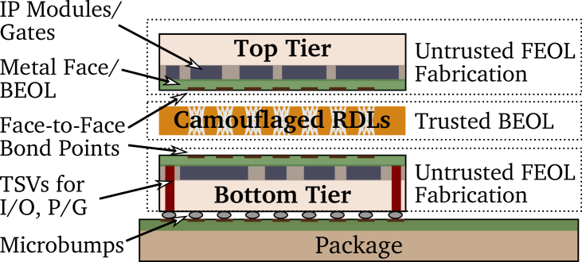
في هذه الورقة، نقترح ونقيّم تدفق CAD موجها بالأمن للدوائر المتكاملة 3D. ونرى أن التكامل 3D مرشح ممتاز لحماية IP، ونبرهن ذلك بجمع تمويه المخطط الفيزيائي (LC) والتصنيع المقسّم (SM) على نحو طبيعي في مخطط واحد (الشكل 1). ويمكن تلخيص هذه الورقة على النحو الآتي:
-
•
في البداية، نستعرض أحدث المقاربات في LC وSM. ونقارن هذه المخططات ونقابل بينها من حيث ضماناتها الأمنية، ونقائصها، وأثرها في PPA.
-
•
بعد ذلك، نطرح نموذجا عمليا للتهديد ينسجم مع نماذج الأعمال الراهنة لدور التصميم. ويتطلب هذا النموذج استخدام LC وSM معا.
-
•
والأهم من ذلك، نبرهن كيف يمكن للتكامل 3D أن يساعد على تحقيق “أفضل ما في العالمين”، وذلك بجمع خصائص LC وSM. لذلك، يتيح مخططنا الحماية المتأصلة من قرصنة IP التي تجريها كيانات خبيثة أثناء التصنيع (المسابك غير الموثوقة) وبعد التصنيع (المستخدمون النهائيون غير الموثوقين). وتتمثل الفكرة المحورية في “تقسيم 3D” للتصميم إلى طبقتين وتمويه الوصلات البينية بين هاتين الطبقتين. ولهذه الغاية، نقترح تدفق CAD وتصنيعا موجها بالأمن للدوائر المتكاملة 3D ذات التكديس وجها لوجه (F2F).
-
•
ننفذ تدفق CAD لدينا باستخدام Cadence Innovus. ونجري تحليلا شاملا لمخططات فيزيائية خالية من مخالفات DRC ومصممة للتكامل F2F 3D، ونقارنها بالحالة الفنية السابقة في LC أو SM (المستهدفة للدوائر المتكاملة 2D/3D) حيثما أمكن.
-
•
نقدم تحليلا أمنيا موسعا، مدعوما بهجوم جديد مرتكز على القرب ضد مخططنا للتكامل 3D الموجَّه بالأمن. ونوفر بيانات تحليلية وتجريبية لإظهار متانة مخططاتنا المقترحة.
2. خلفية
2.1. تمويه المخطط الفيزيائي
يعد التمويه (LC) تقنية على مستوى المخطط الفيزيائي لإحباط جهود الخصم في الاستدلال الصحيح على وظيفة التصميم أثناء الهندسة العكسية لشريحة ما. وينجز LC أثناء التصنيع عبر () إزالة السمات القابلة للتمييز بصريا في الخلايا القياسية، مثلا باستخدام بوابات متشابهة المظهر (rajendran13_camouflage, ) أو مبدلات MUX مهيأة سرا (wang16_MUX, )، أو () استخدام غرس تطعيم انتقائي للتمويه المعتمد على جهد العتبة (collantes16, ; nirmala16, ; Akkaya2018, )، أو () جعل أسلاك و/أو منافذ BEOL أكثر مقاومة للهندسة العكسية (chen15, ; patnaik17_Camo_BEOL_ICCAD, ).
يمكن للمخططات القائمة أن تتسبب في أعباء PPA كبيرة عند تطبيق LC على أجزاء واسعة من التصميم. فعلى سبيل المثال في (rajendran13_camouflage, )، يؤدي تمويه 50% من التصميم إلى أعباء قدرها 150% للقدرة والمساحة، على التوالي (الشكل 2). وقد تعاني مخططات ناشئة أخرى، مثل LC المعتمد على جهد العتبة، من أعباء PPA هائلة أيضا؛ انظر القسم 6 لمزيد من النتائج المقارنة. وتجدر الإشارة أيضا إلى أن معظم المخططات تتطلب تعديلات في عملية تصنيع FEOL، وهو ما قد يكون مكلفا. وهناك، بما أن التمويه يبني السر اللازم لحماية IP، يجب أن تكون منشأة تصنيع FEOL المتعاقد معها موثوقة.
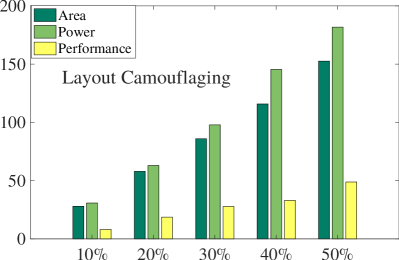
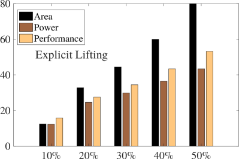
2.2. التصنيع المقسّم
يقدم التصنيع المقسّم (SM) حلا لافتا لحماية IP الخاصة بالتصميم أثناء التصنيع. وفي الغالب، يعني SM أن طبقة الجهاز وعددا قليلا من الطبقات المعدنية الدنيا (الطرف الأمامي من خط التصنيع، FEOL) تُصنّع باستخدام مسبك متقدم قد يكون غير موثوق، في حين تُنشأ الوصلات البينية المتبقية (الطرف الخلفي من خط التصنيع، BEOL) فوق رقاقة FEOL بواسطة منشأة موثوقة. ويكمن الوعد الأمني في أن المسبك غير الموثوق لا يملك إلا جزءا من التصميم الكلي، مما يصعّب استنتاج وظيفة التصميم كاملة، ومن ثم يعيق الخصم عن قرصنة IP أو الإدخال الهادف لأحصنة طروادة عتادية.
غير أن أدوات CAD القائمة، بسبب تركيزها على إغلاق التصميم (ورؤيتها المحايدة أمنيا حتى الآن)، تميل إلى ترك مؤشرات يمكن لخصم قائم على FEOL استغلالها. فالتزاما بمقاييس PPA مثلا، توضع الخلايا المراد وصلها عادة بالقرب بعضها من بعض. ومن ثم، اقترح Rajendran et al. (rajendran13_split, ) ما يسمى هجوم القرب، الذي ينمذج هذا المبدأ لاستنتاج وصلات BEOL المفقودة.
وقد اقتُرحت مؤخرا مخططات متعددة متمحورة حول الموضع (wang18_SM, ; sengupta17_SM_ICCAD, ; patnaik18_SM_DAC, ) و/أو التوجيه (wang17, ; patnaik_ASPDAC18, ; patnaik18_SM_DAC, )، وتهدف جميعها إلى مواجهة جهود تكرارات متعددة من هجمات القرب (wang18_SM, ; magana17, ). ومن بين مخططات الدفاع تلك، يعد رفع الأسلاك فوق طبقة التقسيم طريقة حدسية لتمويه IP. أي إن الأسلاك الكاشفة أو الحرجة (كما يختارها المصمم) تُرفع، مثلا بمساعدة دبابيس توجيه في طبقات أعلى. وفي تجاربنا الاستكشافية على الرفع العشوائي للشبكات (الشكل 2)، نلاحظ زيادات مطردة في كلفة PPA. وكما في LC، ترد نتائج مقارنة إضافية في القسم 6.
2.3. التكامل 3D وتدفقات CAD
يمكن تصنيف التكامل 3D إلى أربعة أنماط: (1) دوائر متكاملة 3D قائمة على المنافذ عبر السيليكون (TSV)، حيث تُصنّع الشرائح منفصلة ثم تُكدّس، وتُنجز الوصلات بين الشرائح بواسطة TSVs متصلة بالطبقات المعدنية؛ (2) التكديس وجها لوجه (F2F)، حيث تُصنّع طبقتان منفصلتين ثم تُربطان معا عند وجهيهما المعدنيين؛ (3) الدوائر المتكاملة المتجانسة 3D، حيث تُصنّع طبقات متعددة تتابعيا، وتستند وصلات ما بين الطبقات إلى منافذ معدنية عادية؛ (4) التكامل 2.5D، حيث تُصنّع الشرائح منفصلة ثم تُربط بحامل وصلات بينية على مستوى النظام هو المِعترِض. ولكل خيار نطاقه وفوائده وعيوبه ومتطلباته الخاصة لعمليات CAD والتصنيع (knechtel16_Challenges_ISPD, ; knechtel17_TSLDM, ).
ويبدو أن التكديس F2F قد برز بوصفه الأكثر وعدا (إلى جانب الدوائر المتكاملة المتجانسة 3D)؛ إذ تعمل دراسات متعددة بنشاط على تنسيق الجهود لتبنيه تجاريا (chang16, ; ku18, ; peng17, ; peng15_F2F, ). والهدف الرئيس لهذه الدراسات هو التحسين من أجل PPA والمعمارية الميكروية، لا أمن العتاد. وبشكل أكثر تحديدا، توازن تدفقات CAD السابقة بعناية بين التوصيل داخل الطبقة والوصلات البينية العمودية عبر الطبقات. ومع أن الأخيرة هي السمة الأساسية للتكامل 3D، فإن عددا مفرطا من العبور/القطوع يؤثر أيضا تأثيرا كبيرا في PPA. ومع ذلك، كما سنوضح بمزيد من التفصيل في القسم 6.3، فإن عددا كبيرا من القطوع ضروري لتحقيق متانة قوية ضد قرصنة IP.
3. نموذج تهديد عملي
نطرح هنا نموذجا جديدا وعمليا للتهديد في قرصنة IP، ينسجم مع نماذج أعمال دور التصميم الراهنة. لننظر في السيناريو الآتي. تكلّف دار تصميم مسبكا غير موثوق بتصنيع أحدث إصدار من شريحة ما. وغالبا ما يكون هذا الإصدار الجديد ممتدا من إصدارات سابقة للشريحة (الشكل 3)؛ فإعادة استخدام وحدات IP وإعادة توظيف المعماريات المثبتة مبادئ معروفة. ومن ثم، يمكن الحصول على الإصدارات السابقة من الشريحة من السوق. على سبيل المثال، لنفكر في هاتف iPhone® الرائد من Apple®. فقد طُرح iPhone 7، المعتمد على شريحة A10، في سبتمبر 2016، وطُرح iPhone X، المعتمد على الشريحة اللاحقة A11، في سبتمبر 2017؛ وكلتا الشريحتين متاحتان في السوق. وفي هذا السيناريو، من الحدسي أن تصبح استعادة IP الجديدة أقل صعوبة بكثير للمصنع الذي قد لا يكون موثوقا. فإذا كان المسبك نفسه قد كُلّف بالفعل بالإصدار السابق، فإنه يمتلك ذلك المخطط السابق مباشرة؛ وإلا فيمكنه إجراء هندسة عكسية للمخطط من شرائح تُشترى من السوق. وفي كل الأحوال، يستطيع الخصوم مقارنة ذلك المخطط السابق بالمخطط الجديد، لتحديد الأجزاء المختلفة والفريدة والتركيز عليها.
والخلاصة من هذه التجربة الفكرية هي أن كلا من SM وLC مطلوبان لتصنيع جميع إصدارات الشرائح المختلفة. فـ LC مطلوب لمنع الهندسة العكسية للمخطط الحالي من أي مسبك آخر يُكلّف بإصدارات لاحقة من الشريحة؛ أما SM فضروري لمنع المسبك الذي يصنّع الإصدار الحالي (والمكلف أيضا بتنفيذ LC) من استنتاج المخطط الكامل للإصدار الحالي بسهولة. ولا تستطيع الأعمال السابقة التعامل مع نموذج التهديد العملي هذا إلا بتطبيق كل من SM و LC، وهو ما يمكن أن يفاقم الأعباء والنقائص كما نوقش في القسم 2. بعد ذلك، نعرض مخططنا للجمع بين SM وLC على نحو طبيعي مع الاستفادة من التكامل 3D.
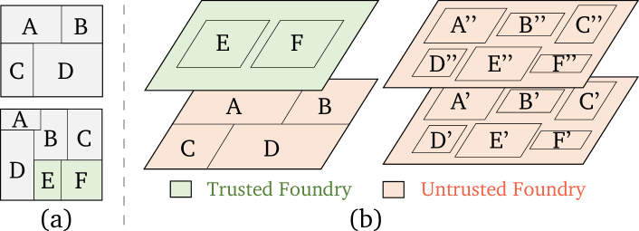
4. التكامل 3D: مفهومنا لحماية IP في البعد التالي
التقدم الأساسي الذي نقترحه في SM هو “تقسيم 3D” للتصميم إلى طبقات متعددة. أي إنه، بخلاف SM المعتاد في 2D حيث يُقسّم المخطط كله إلى FEOL وBEOL، نقسّم هنا المخطط نفسه إلى جزأين. ويُصنّع هذان الجزءان بوصفهما شريحتين منفصلتين ثم يُكدّسان ويوصلان بينيا، وفي هذه الورقة يتم ذلك اعتمادا على تدفق F2F. وعملنا هو الأول الذي يبرهن هذا الامتداد الطبيعي لـ SM.11 1 نقر بأن فكرة SM 3D تُصوّرت في 2008 بواسطة Tezzaron (tezzaron08, ). كذلك، توجد دراسات تشير إلى فوائد التكامل 3D لـ SM (dofe17, ; gu16, ; imeson13, ; xie17, ; valamehr13, )، لكنها جميعا تنطوي على قصور أو تغطي سيناريوهات مختلفة: يبقى Dofe et al. (dofe17, ) وGu et al. (gu16, ) عند المستوى المفاهيمي؛ أما Xie et al. (xie17, ) وImeson et al. (imeson13, ) فينظرون في التكامل 2.5D حيث لا تُخفى عن المسبك غير الموثوق إلا الأسلاك؛ ويقترح Valamehr et al. (valamehr13, ) تكديس دارات مراقبة مخصصة فوق شرائح غير موثوقة، أي إنهم يستفيدون من التكامل 3D للمراقبة أثناء التشغيل لا لحماية IP. ونقترح أن SM 3D يمكن تنفيذه إما بواسطة مسابك مختلفة أو بواسطة مسبك واحد (الشكل 3):
-
(1)
مسابك موثوقة وغير موثوقة مختلفة: هنا نسند التصنيع إلى مسبك منخفض التقنية لكنه موثوق وإلى مسبك متقدم لكنه غير موثوق، وكلاهما يمتلك قدرات FEOL/BEOL. وقد تتاح لشركة شرائح خيارات أكثر بكثير لتكليف مسبك موثوق (أو حتى التصنيع داخليا) إذا كانت العقدة التقنية المطلوبة قديمة لكنها ما تزال متاحة على نطاق واسع، مثل 180nm. ومع أن إبقاء جزء واحد من التصميم حصرا لدى مسبك موثوق واعد من الناحية الأمنية، فإن عملية هذا الخيار تبدو محدودة.
-
(2)
مسابك/مسبك غير موثوق: هنا نكلف فقط مسابك متقدمة لكنها غير موثوقة لكلا الجزأين/الشريحتين. وبهذه الطريقة، قد نستفيد من أحدث عقدة تقنية، لكننا بطبيعة الحال نحتاج إلى تقسيم التصميم بطريقة لا تستطيع معها المسابك استنتاج المخطط الكامل بسهولة، حتى إذا تواطأت. وبمجرد توفير هذه الحماية القوية، يصبح من المعقول اقتصاديا تكليف مسبك واحد فقط.
4.1. مسابك موثوقة وغير موثوقة مختلفة
ينطوي تكليف عدة مسابك ذات تقنيات ومستويات ثقة مختلفة على تبعات حاسمة كما يأتي.
أولا، بخصوص نموذج التهديد العملي، من المباشر إسناد IP الجديدة حصرا إلى الشريحة التي يصنعها المسبك الموثوق. أما من حيث متانة مخطط SM 3D الآمن بطبيعته، فلا يوجد حتى الآن نموذج هجوم عام في الأدبيات يستطيع تغطية هذا السيناريو، أي: عند توفر جزء واحد فقط من المخطط، كيف يمكن استنتاج الوصلات والبوابات المفقودة. ونحن نعتقد أن هجوما مناظرا بنمط “الصندوق الأسود” سيكون بالغ الصعوبة، لكننا نقترح أن ينظر المجتمع البحثي فيه.
ثانيا، بسبب اختلاف الخطوات في التقنيات المختلفة، لا يمكن إسناد إلا جزء من التصميم إلى الشريحة منخفضة التقنية. ويصح ذلك على الأقل ما دامت (أ) الشريحة المتقدمة ينبغي أن تتمتع باستغلال معقول من أجل كفاءة الكلفة و(ب) حدود كلتا الشريحتين ينبغي أن تبقى متماثلة، وهو مطلب شائع في التكديس 3D.
ثالثا، تهيمن الشريحة منخفضة التقنية على القدرة والأداء الكليين، وقد تزيد عوامل أخرى مثل الطفيليات من تفاقم الأعباء عمليا (peng17, ).
في تجاربنا الاستكشافية، نقيس إمكانات مثل هذا SM 3D، بافتراض مسبك موثوق عند 180nm ومسبك غير موثوق عند 45nm. وبشكل أكثر تحديدا، نستفيد من مكتبات OSU (OSU_PDK, ). وتحتوي مكتباتها العدد والنوع والقوى نفسها من الخلايا؛ وهذا يضمن مقارنة عادلة لأن أدوات CAD لا تستطيع الاستفادة من إصدارات مختلفة من الخلايا. استُخدم Synopsys DC للتوليف، وأُنجز التموضع والتوجيه باستخدام Cadence Innovus 17.1. وترد نتائج PPA لإغلاق توقيت عدواني في إعداد خط الأساس 2D في الجدول 1.22 2 تبتعد العقدة 45nm أربعة أجيال عن 180nm، وتتحسن التأخيرات بنسبة 30% لكل جيل (borkar1999design, )؛ ومن المفاجئ أن تدهورات التأخير في مكتبة OSU عند 180nm أدنى بوضوح من هذه التوقعات. ونعتقد أن ذلك يعود إلى الطبيعة الأكاديمية للمكتبة. وقت الكتابة، لم تكن لدينا إمكانية الوصول إلى مكتبات تجارية مختلفة. وعلى أي حال، تبقى النتائج الرئيسة لتجاربنا صالحة. ذلك لأنه إذا عُدلت أرقام التأخير في المكتبة، ومع استمرار افتراض استخدام الأنواع نفسها من الخلايا، فإن التأخير الكلي لن يفعل سوى أن يتدرج خطيا. بالنسبة إلى إعداد F2F 3D غير المتجانس (الشكل 4)، نلاحظ بعض التدهور في الأداء مع رفع مزيد من البوابات إلى الطبقة منخفضة التقنية. كذلك، لاحظ من الجدول 1 أن كلفة المساحة (والقدرة) تبلغ 12X (و9X) عند مقارنة 180nm بـ 45nm. وللحفاظ على استغلال متوازن في كلتا الطبقتين، تعني هذه الارتباطات أنه ينبغي عدم رفع أكثر من 8% من البوابات إلى الطبقة منخفضة التقنية. ومع أن هذا الرفع محدود النطاق يوفر مكسب أداء معقولا، ولا سيما من منظور تكليف مسبك 180nm فقط، فقد لا يكفي لتغطية كل IP الحساسة.
وخلاصة القول إننا نجد أن الاستفادة من مسابك مختلفة لها حدود عملية. فإسناد أكثر من 8% من البوابات إلى المسبك منخفض التقنية غير فعال، خاصة عند مراعاة أن هذا المسبك يجب أن ينفذ LC أيضا، وهو ما يفرض كلفة إضافية.
| Benchmark | 45nm | 180nm | ||||||
|---|---|---|---|---|---|---|---|---|
| # Instances | Area | Power | Delay | # Instances | Area | Power | Delay | |
| b17_1 | 14,850 | 32,770.28 | 8.85 | 2.29 | 14,711 | 417,416 | 71.54 | 3.59 |
| b20 | 6,959 | 15,549.31 | 8.12 | 2.87 | 7,521 | 216,168 | 97.94 | 3.6 |
| b21 | 7,327 | 16,096.05 | 8.79 | 2.88 | 7,060 | 203,216 | 85.66 | 3.89 |
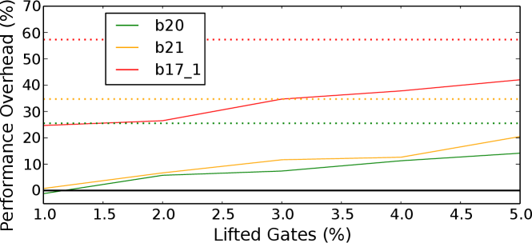
4.2. مسابك غير موثوقة
ينطوي التعامل مع عدة مسابك غير موثوقة تقدم التقنية نفسها (أو مع مسبك واحد غير موثوق) على تبعات رئيسة أيضا.
أولا، يمكن توقع أن تتفوق قدرة وأداء مثل هذه “الدوائر المتكاملة 3D التقليدية” على سيناريو التقنيات المختلفة أعلاه. وفي الواقع، أُثبت منذ مدة نجاح طي (أو تقسيم) وحدات IP 2D داخل الدوائر المتكاملة 3D (lin16, ; jung14, ; jung17, ; peng15_F2F, )، وإن لم يكن ذلك مع مراعاة قرصنة IP. ومن ثم، قد توفر الوفورات الناتجة من طي وحدات IP هامشا لمخطط دفاعي، لكننا نبيّن في بقية هذا العمل أن هذا الهامش يعتمد طبيعيا على التصميم والتدابير المطبقة للحماية.
ثانيا، على الرغم من أن وحدات IP يمكن طيها/تقسيمها عبر الطبقات، وهو ما قد يضلل مهاجم الهندسة العكسية، فإن كلتا الطبقتين ما تزالان تصنعان بواسطة مسابك غير موثوقة. وتعني هذه الحقيقة أن مخططات LC التي تستهدف مستوى الجهاز لا تستطيع أن تساعد في حماية IP من الخصوم في تلك المسابك. ومن اللافت أن هناك نمطا آخر من LC آخذ في الظهور، وهو تمويه الوصلات البينية (cocchi14, ; chen15, ; vijayakumar16, ; patnaik17_Camo_BEOL_ICCAD, ). ينظر Chen et al. (chen15, ) في منافذ حقيقية ووهمية باستخدام المغنيسيوم Mg وأكسيد المغنيسيوم MgO، على التوالي. ويبرهنون أن منافذ Mg الحقيقية تتأكسد بسرعة إلى MgO، ومن ثم يمكن أن تصبح غير قابلة للتمييز عن منافذ MgO الوهمية الأخرى أثناء الهندسة العكسية. وقد أظهر Hwang et al. (hwang12_transient_electronics, ) أن Mg وMgO يذوبان بسرعة عند إحاطتهما بسوائل، وهو أمر لا مفر منه في إجراءات الحفر المستخدمة في الهندسة العكسية. لذلك، ومن دون فقدان العمومية، نفترض أن تمويه الوصلات البينية لدينا قائم على استخدام منافذ Mg/MgO.
ونرى أن تمويه الوصلات البينية يلائم طبيعيا الدوائر المتكاملة F2F 3D؛ إذ يمكن بين الطبقات تصنيع طبقات إعادة توزيع (RDLs) إضافية قصدا للتمويه. ولا يتطلب ذلك إلا منشأة BEOL موثوقة، وهو افتراض عملي نظرا إلى أن تصنيع BEOL أقل تطلبا بكثير من تصنيع FEOL، ولا سيما في الطبقات المعدنية العليا (تقع RDLs بين روابط F2F التي تكون هي نفسها في طبقات أعلى).
5. المنهجية
نشرح هنا تدفق CAD والتصنيع لمفهومنا عن التكديس F2F الموجَّه بالأمن. ويستلهم تدفق CAD جزئيا من Chang et al. (chang16, )، لكننا نصوغ تدفقنا بتركيز خاص على حماية IP (الشكل 5). ويتيح تدفقنا للمصمم المعني استكشاف المفاضلات بين PPA والقطوع، أي عدد وصلات F2F بين الطبقات. والقطوع مقياس حاسم للتحليل الأمني، وتناقش بمزيد من التفصيل في القسم 6.3. ومن المهم أيضا أن نلاحظ أننا نتبع الدعوة إلى إخفاء هوية المخطط الفيزيائي (imeson13, )؛ فنحن نتجنب عمدا خطوات التحسين عبر الطبقات، لتخفيف المؤشرات على مستوى المخطط حول BEOL/RDLs المموهة.
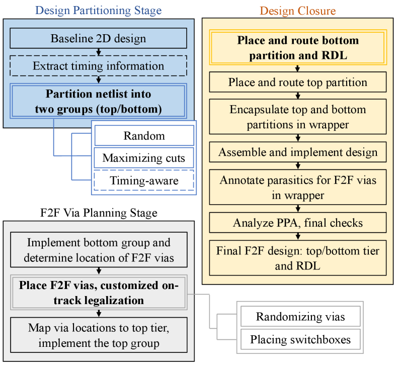
أما بالنسبة إلى عملية F2F، فنقترح التعديل التالي الموجَّه بالأمن. تُصنّع رقائق الطبقتين بواسطة مسبك واحد غير موثوق (أو مسبكين غير موثوقين)، ثم تُشحن إلى منشأة BEOL وتكديس موثوقة. وتنشئ هذه المنشأة الموثوقة طبقات RDLs المموهة فوق إحدى الرقاقتين، وتواصل تدفق F2F المعتاد (أي قلب الرقاقة الثانية وربطها فوقها).
5.1. تقسيم التصميم
بعد الحصول على التصميم 2D بعد التوجيه، نقسم قائمة الشبكات إلى مجموعتي العليا والسفلى، اللتين تمثلان طبقتي الدائرة المتكاملة F2F. وتُنشأ منافذ I/O لكل الوصلات البينية بين المجموعتين، لتمثل منافذ F2F. وإلى جانب منافذ F2F هذه، نضع منافذ I/O الأولية عند حد الشريحة، كما في التصاميم التقليدية 2D. (وهذا عملي أيضا للتكامل F2F حيث تُصنّع TSVs عند حد الشريحة لمنافذ I/O الأولية وشبكة P/G.)
التقسيم العشوائي: طريقة ساذجة للتقسيم الموجَّه بالأمن هي إسناد البوابات إلى مجموعتي الأعلى/الأسفل عشوائيا. وعند فعل ذلك، سيملي عدد القطوع عدد البوابات ونوعها وترابطها البيني المحلي التي تُسند إلى مجموعة واحدة.
تعظيم حجم القطع: كما أُشير سابقا (وسيُستكشف أكثر في القسم 6.3)، كلما كبر حجم القطع ازدادت صعوبة قرصنة IP. لذلك، نسعى هنا إلى زيادة حجم القطع إلى أقصى حد معقول ممكن. أولا، تُستخرج تقارير التوقيت لخط الأساس 2D. بعد ذلك، تُناوب البوابات عشوائيا على طول مسارات توقيتها بين مجموعتي الأعلى/الأسفل. وفي أفضل حالة أمنية (وهي أيضا أسوأ حالة من حيث القدرة والأداء)، تُسند كل بوابة أخرى إلى مجموعة الأعلى والأسفل، على التوالي؛ وبالنسبة إلى مسار يحوي بوابات، تنشأ قطوع.
تقسيم واع بالتوقيت: نسعى هنا إلى خفض كلفة المخطط الفيزيائي مع الحفاظ على حماية قوية. أولا، يحدد هامش التوقيت المتاح لكل بوابة. ثم، استنادا إلى عتبة يحددها المستخدم، تبقى البوابات الحرجة في الطبقة السفلى، في حين تُنقل كل البوابات الأخرى إلى الطبقة العليا. وتكرر هذه العملية بعتبات توقيت معدلة إلى أن يتحقق استغلال متساو للطبقتين. لاحظ أنه ليس من السهل على مهاجم أن يفهم هل أي مسار في مجموعة الأسفل/الأعلى حرج أم لا (أو كاملا في هذا الصدد). وبعبارة أخرى، يجب على المهاجم معالجة المجموعتين معا، والأهم من ذلك، حل منافذ F2F العشوائية والوصلات البينية المموهة (انظر أدناه).
5.2. تخطيط وصلات F2F البينية
بعد وضع الطبقة السفلى، تُحدد المواقع الأولية لمنافذ F2F بالقرب من المشغلات/المصارف. ثم يُجرى وضع موجَّه بالأمن، أي عشوائي، لمنافذ F2F، إلى جانب تقنين مخصص على المسارات. بعد ذلك، توضع صناديق تبديل مموهة، وتُطابق منافذ F2F مع الطبقة العليا.
العشوائية: من السهل ملاحظة أن التخطيط المعتاد لوصلات F2F البينية لا يمكن أن يكون آمنا، لأن ذلك يصفّ منافذ الطبقة السفلى والطبقة العليا مباشرة. لذلك، نعشوئ ترتيب منافذ F2F كما يأتي. (الشكل 6). نضع منافذ F2F إضافية عشوائيا (لكن بمساعدة التقنين على المسارات) في RDL العليا. ثم توجه هذه المنافذ العشوائية عبر RDLs نحو منافذ F2F الأصلية المتصلة بالطبقة السفلى، وهي مدمجة أيضا في صناديق تبديل مخصصة (انظر لاحقا).
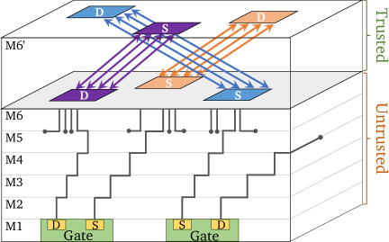
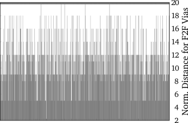
صناديق تبديل مموهة: للحماية من الهندسة العكسية، نموّه الاتصالية في RDLs باستخدام صندوق تبديل مخصص (الشكل 7). ويتيح صندوق التبديل هذا مطابقة خفية واحد إلى واحد لأربعة مشغلات مع أربعة مصارف. وجوهر صندوق التبديل هو منافذ Mg/MgO (chen15, )، لإخفاء أي مشغل يتصل بأي مصرف. وتمثل دبابيس صندوق التبديل منافذ F2F. ولتمكين الاستخدام السليم لموارد التوجيه، تُحاذى الدبابيس مع مسارات التوجيه. وللعشوائية، تستخدم المنافذ الإضافية المتصلة بالطبقة العليا لإعادة التوجيه أثناء إغلاق التصميم.
التقنين على المسارات: يُنقل كل منفذ F2F داخل حد النواة، باتجاه نقطة المركز التي تحددها كل النسخ المتصلة بهذا المنفذ. بعد ذلك، نحصل على أقرب مواقع على المسار ما تزال غير مشغولة للوضع الفعلي. وعند الحاجة، نزيد نصف قطر البحث تدريجيا مع مراعاة عتبة يحددها المستخدم.
5.3. إغلاق التصميم
بعد مرحلة تخطيط منافذ F2F، توضع الطبقتان وتوجهان منفصلتين. هنا لا نستخدم أي تحسين عبر الطبقات، لإخفاء هوية كل طبقة عن الأخرى، لكننا نطبق التحسين داخل الطبقة. وأثناء توجيه الطبقة السفلى، نوجه أيضا RDL العشوائية والمموهة مع صناديق التبديل الخاصة بها. بعد ذلك، نغلف قسمي الأعلى والأسفل في قائمة شبكات غلافية، ونركب التصميم وننفذه، ثم ننشئ ملف SPEF يلتقط طفيليات RC لمنافذ F2F. أخيرا، نجري فحوص DRC، ونقيّم PPA، ونصدر ملفات DEF منفصلة للطبقة العليا/السفلى وRDL.
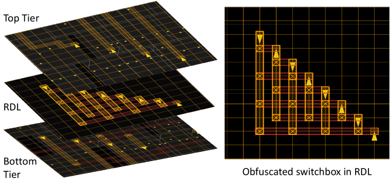
6. النتائج
6.1. الإعداد التجريبي
التنفيذ وتقييم المخطط الفيزيائي: يعتمد تدفق CAD لدينا على Cadence Innovus 17.1، باستخدام نصوص Tcl وPython مخصصة، تفرض أعباء زمن تشغيل ضئيلة. ونستخدم مكتبة Nangate 45nm (nangate11, ) في تجاربنا، مع ست طبقات معدنية في إعداد خط الأساس 2D وست طبقات لكل من الطبقة العليا والسفلى في إعداد F2F. وتتكون RDL من أربع طبقات مكررة من M6، وتُنمذج منافذ F2F بوصفها منافذ M6. (ومع أن هذا افتراض متفائل في الوقت الراهن، يمكن توقع أن يبلغ تصغير F2F هذه الأبعاد.) ويُجرى تحليل PPA عند زاوية العملية البطيئة بجهد 0.95V وV. وبالنسبة إلى تحليل القدرة، نفترض نشاط تبديل مقداره 0.2 لكل المدخلات الأولية. ونضمن خلو المخططات من أي ازدحام باختيار معدلات استغلال مناسبة. وتُجرى جميع التجارب على Intel Xeon E5-4660 @ 2.2 GHz مع CentOS 6.9. وبالنسبة إلى Cadence Innovus، خُصص ما يصل إلى 16 نواة.
إعداد التقييم الأمني: لأننا نروّج لـ SM 3D، لا يمكن تطبيق هجمات القرب الاعتيادية مثل (wang18_SM, ; magana17, ). لذلك، نقترح (ونصدر علنا (webinterface, )) هجوما جديدا ضد SM 3D، آخذا في الحسبان أيضا تمويه RDL الكامن في مخططنا؛ انظر أيضا القسم 6.3. وتُقيّم قوة هجومنا بمقاييس شائعة الاستخدام، أي معدل الاتصال الصحيح (CCR) ومسافة هامنغ (HD). وتُحسب HD باستخدام Synopsys VCS مع 1,000,000 أنماط اختبار. أما بالنسبة إلى هجمات الهندسة العكسية المعتمدة على SAT، فنستفيد من (subramanyan15, ). ويُضبط حد المهلة المرتبط بها على 72 ساعات.
التصاميم: تُستخدم معايير اختبار من مجموعتي ISCAS-85 وITC-99 لتحليل المخطط الفيزيائي والأمن.
6.2. تقييم المخطط الفيزيائي الموجَّه بالأمن
يتيح تدفقنا المفاضلة بين PPA والقطوع؛ وتملي الأخيرة المتانة ضد قرصنة IP أثناء التصنيع وبعده. يعرض الشكل 8 صور المخطط الفيزيائي للمعيار الاختباري b22.
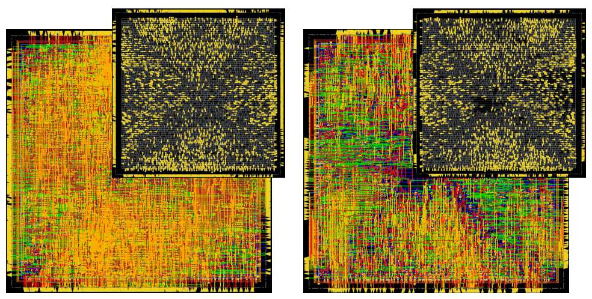
تعظيم حجم القطع: هنا ننقل البوابات من مجموعة الأسفل إلى مجموعة الأعلى بخطوات مقدارها 10%، وصولا إلى 50%. وبما أن الاستراتيجية عشوائية، نجري عشر تشغيلات لكل معيار اختباري ولكل نسبة معطاة من البوابات المراد نقلها. وتُوضح توزيعات القدرة والأداء الناتجة في الشكل 9. ومن اللافت أنه حتى في أفضل حالة أمنية، أي نقل 50% من البوابات عشوائيا، تظل بعض التشغيلات تقدم قدرة و/أو أداء أفضل من خط الأساس 2D. وتبرهن هذه النتيجة إمكانات مخططنا. لاحظ أننا نمتنع في هذه التجارب الأولية عن عشوائية منافذ F2F وعن استخدام صناديق التبديل المموهة.
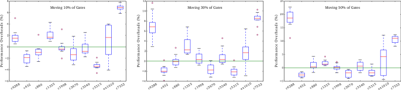
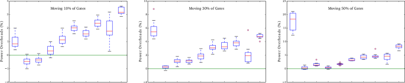
بمجرد تعشوئ منافذ F2F واستخدام صناديق التبديل، قد تتكبد المعايير الأكبر مثل b18_1 أعباء تصل إلى 60% (الشكل 10). ومن ثم، رغم أن هذه الاستراتيجية تقدم متانة قوية، قد تكون هناك رغبة في مفاضلة أكثر عدوانية بين PPA والأمن.
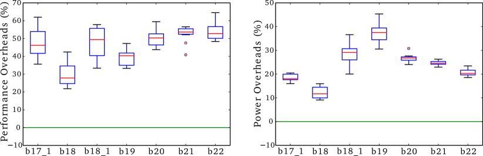
تقسيم واع بالتوقيت مع عشوائية F2F وصناديق تبديل مموهة: يعالج هذا الإعداد الحاجة المبينة أعلاه. وفي الواقع، نلاحظ أنه حتى للمعايير الاختبارية الأكبر (الشكل 11)، يمكن أن توجد بعض الفوائد التخطيطية عند مقارنة هذه التصاميم 3D بخط أساسها 2D. ولإظهار الأثر الأمني لهذا الإعداد، نرسم المسافات المطَبّعة بين منافذ F2F المراد وصلها في الشكل 6. ويُظهر هذا الشكل تباينا واسعا عبر شبكات ما بين الطبقات، في حين أن المسافات في التكديس F2F المنتظم/غير المحمي ستكون كلها صفرا. ولتحليل أمني أكثر تفصيلا، انظر القسم 6.3. بعد ذلك، نقارن عملنا بالأعمال السابقة.
مقارنة مع مخططات LC: يكتسب LC المعتمد على العتبة زخما في الآونة الأخيرة. ورغم أنه واعد من حيث المتانة (حتى أثناء التصنيع في بعض المخططات)، فإن أعباء PPA كبيرة. فعلى سبيل المثال، يذكر Akkaya et al. (Akkaya2018, ) أعباء قدرها 9.2، و6.6، و3.3 لـ PPA، على التوالي، مقارنة ببوابة NAND تقليدية ذات 2 مداخل. ويذكر Nirmala et al. (nirmala16, ) كلفة قدرها 11.2 و10.5 للقدرة والمساحة، على التوالي. ويذكر Collantes et al. (collantes16, ) كلفة قدرة وأداء قدرها 72% و31%، على التوالي، لتمويه بنسبة 40%. وفي (DBLP:journals/corr/JangG17, )، تُستغل جهود العتبة لتمويه الوصلات البينية، مما يؤدي إلى أعباء PPA قدرها 29%، و44%، و33%، وذلك عند تمويه 15% من الشبكات. وفي (patnaik17_Camo_BEOL_ICCAD, )، تذكر أعباء PPA قدرها 4.9%، و31.2%، و25% لـ b17 عند LC بنسبة 60% (عبر تمويه الوصلات البينية). وحتى بالمقارنة مع هذه المخططات الأخيرة الأكثر وعدا، نستطيع تقديم PPA أفضل بكثير (باستثناء (patnaik17_Camo_BEOL_ICCAD, ) فيما يخص القدرة).
اقترح Dofe وYan وet al. (dofe16_mono3D, ; yan17_camo, ) مؤخرا LC للدوائر المتكاملة المتجانسة 3D. وفي وقت الكتابة، لم تكن مكتباتهم متاحة لنا لإجراء مقارنة تفصيلية. والأهم من ذلك، أن تصنيع مثل هذه الدوائر المتكاملة 3D المموهة يتطلب الثقة في مسبك متقدم. ولا يمكن تطبيق مفهوم SM 3D كما في مخططنا على الدوائر المتكاملة المتجانسة 3D (بسبب عملية التصنيع التتابعية) ومن ثم، فإن مخططهم (dofe16_mono3D, ; yan17_camo, ) لا يستطيع حماية IP وقت التصنيع.
مقارنة مع مخططات SM: في الجدول 2، نقارن مع بعض الدراسات حول SM 2D. وبشكل عام، فإن التقنيات المتمحورة حول الموضع لدى Wang et al. (wang18_SM, ) تنافسية فيما يتعلق بالقدرة والأداء. لكن، كما هو الحال دائما في SM المعتاد، لا يستطيع Wang et al. إلا ردع الخصوم القائمين على المسبك، وليس المستخدمين النهائيين الخبيثين.
| Benchmark | BEOL+Physical (wang18_SM, ) | Logic+Physical (wang18_SM, ) | Logic+Logic (wang18_SM, ) | Concerted Lifting (patnaik_ASPDAC18, ) | Proposed with Random Partitioning | ||||||||||
| Area | Power | Delay | Area | Power | Delay | Area | Power | Delay | Area | Power | Delay | Area∗ | Power | Delay | |
| c432 | N/A | 0.17 | 0.49 | N/A | 0.44 | 0.24 | N/A | 0.17 | 0.21 | 7.7 | 13.1 | 11.6 | -50 | -2.66 | 0.31 |
| c880 | N/A | 0.25 | 0.05 | N/A | 0.35 | 0.03 | N/A | -0.05 | -0.09 | 0 | 12.1 | 19.9 | -50 | 0.97 | 1.6 |
| c1355 | N/A | 0.52 | 0.57 | N/A | 0.75 | 0.42 | N/A | 0.03 | 0.01 | 0 | 12.2 | 21.3 | -50 | 1.83 | 0.38 |
| c1908 | N/A | 1.1 | 1.3 | N/A | 1.1 | 0.23 | N/A | 0.45 | 0.39 | 7.7 | 14.6 | 18.9 | -50 | 0.11 | 1.69 |
| c2670 | N/A | 0.29 | 0.27 | N/A | 0.29 | 0.27 | N/A | 0.05 | 0.03 | 7.7 | 10 | 12 | -50 | -2.18 | 3.32 |
| c3540 | N/A | 0.53 | 0.28 | N/A | 0.36 | 0.02 | N/A | 0.14 | -0.02 | 7.7 | 5 | 2.8 | -50 | 0.59 | 4.32 |
| c5315 | N/A | 0.19 | -0.01 | N/A | 0.67 | 0.08 | N/A | 0.29 | -0.01 | 7.7 | 7.9 | 16.9 | -50 | -1.66 | 4.73 |
| c6288 | N/A | 0.29 | 0.19 | N/A | 0 | 0 | N/A | 0.1 | 0.67 | 27.3 | 12.3 | 15.7 | -50 | 10.43 | 10.21 |
| c7552 | N/A | 0.28 | -0.36 | N/A | 0.35 | -0.05 | N/A | 0.56 | 1.77 | 16.7 | 9.3 | 15.7 | -50 | 10.57 | 8.21 |
| Average | N/A | 0.4 | 0.31 | N/A | 0.48 | 0.14 | N/A | 0.19 | 0.33 | 9.2 | 10.7 | 15 | -50 | 2 | 3.86 |
∗اتباعا للممارسة القياسية في دراسات 3D، نبلغ عن المساحة بالنظر إلى حدود القوالب الفردية. في (patnaik_ASPDAC18, )، تذكر المساحة أيضا من حيث حدود القالب.
في الجدول 3، نقارن مع مخطط التكامل 2.5D الموجَّه بالأمن لدى Xie et al. (xie17, ). ويعد عملهم ذا صلة لأنهم يقترحون مفهوما أمنيا مشابها قائما على أحجام القطع. وبالنسبة إلى المعايير الاختبارية التي نظر فيها المؤلفون، نحصل في المتوسط على قطوع أكثر بنسبة 53% في مخططنا. (لأحجام القطع لدينا في المعايير الأكبر، ارجع إلى الجدول 4). وبالنسبة إلى PPA، نلاحظ كلفا أقل بكثير من (xie17, ).33 3 فيما يتعلق بالمساحة، لاحظ أننا نبلغ عن حدود القالب، وهو إجراء قياسي في دراسات 3D. وبناء على ذلك، وبالنسبة إلى أرقامنا البالغة -50%، تتطلب الدائرة المتكاملة F2F 3D وخط الأساس 2D المساحة السيليكونية الكلية نفسها، أي إننا نتكبد كلفة مساحة مطلقة قدرها 0%. ومع أن Xie et al. يذكرون كلفة مشابهة، فإنهم يغفلون أن مخططهم يتطلب مِعترِضا يكون، بصفته على الأقل بحجم الشرائح المكدسة عليه، مسببا لكلفة قدرها 100%. ومع ذلك، وبما أنه يتكون أساسا من طبقات معدنية، نقر بأن المعترض أقل كلفة من الشرائح العادية. وفضلا عن ذلك، كما هو الحال في SM المعتاد، فإن مخططهم 2.5D ليس متينا بطبيعته ضد المستخدمين النهائيين الخبيثين، بينما مخططنا 3D كذلك.
6.3. التحليل الأمني والهجمات
هجوم القرب لـ SM 3D: على حد علمنا، لا يوجد بعد في الأدبيات هجوم يستطيع التعامل مع SM 3D. لذلك، نقترح وننفذ مثل هذا الهجوم، مع التركيز على مسبك واحد غير موثوق (أو مسبكين متواطئين) وعلى تمويه RDL لدينا. ونحن نوفر هذا الهجوم بوصفه إصدارا عاما في (webinterface, ).
نفترض أن المهاجم يمتلك ملفات المخطط الفيزيائي للطبقتين العليا والسفلى، لكنه مبدئيا لا يملك وصولا إلى RDL الموثوقة (نناقش أدناه تبعات الحصول على RDL). وعلى الرغم من أنها تعرف عدد المشغلات المتصلة من الطبقة السفلى إلى العليا وبالعكس، فإنه لا يعرف أي مشغل يتصل بأي مصرف، نظرا إلى منافذ F2F العشوائية. تذكر أننا لا نجري تحسينا عبر الطبقات، لتخفيف أي مؤشرات على مستوى المخطط الفيزيائي.44 4 تذكر أيضا سيناريو المسابك المختلفة في القسم 4.1، وهو أكثر صعوبة بدرجة كبيرة. فهناك لا يحتاج المهاجم فقط إلى معالجة مطابقات المشغل-المصرف، بل يحتاج فوق ذلك إلى تخمين مجموعة البوابات التي يحجبها المسبك الموثوق. لنفترض وجود مشغلات في الأسفل و مشغلات في الطبقة العليا. وبما أننا لا نسمح بتفرعات داخل RDL (لأن هذا سيشغل منافذ F2F أكثر من اللازم)، فلا توجد إلا مطابقات واحد إلى واحد؛ وهذا ينتج عنه قائمة شبكات ممكنة. لكن عند استخدام صناديق التبديل، يستطيع المهاجم معالجة مجموعات من أربعة مشغلات/مصارف دفعة واحدة. ومع ذلك، عليه حل (أ) أي أربعة مشغلات في الطبقة العليا متصلة بأي أربعة مصارف في الطبقة السفلى وبالعكس، و(ب) الاتصالية داخل صناديق التبديل المموهة. وفي هذه الحالات، تبقى قائمة شبكات ممكنة. بعد ذلك، نعرض الاستدلالات المقابلة الواقعة في صميم هجومنا.
-
(1)
مطابقات فريدة: يغذي أي مشغل في الطبقة السفلى/العليا مصرفا واحدا فقط في الطبقة العليا/السفلى. لذلك سيعيد المهاجم وصل المشغلات والمصارف كل على حدة. وعلاوة على ذلك، يمكنه التعرف إلى جميع منافذ I/O الأولية لأنها تُنفذ باستخدام روابط سلكية أو TSVs، لا بمنافذ F2F عشوائية.
-
(2)
مؤشرات المخطط الفيزيائي: على الرغم من أن منافذ F2F عشوائية، قد يحاول المهاجم ربط قرب واتجاه منافذ F2F باتصاليتها المقابلة في RDL المحجوبة. ولهذه الغاية، يمكنه أيضا الاستفادة من التوجيه نحو منافذ صندوق التبديل. وفضلا عن ذلك، واستحضارا لنموذج التهديد العملي، قد يستطيع المهاجم تحديد بعض IP المعروفة ومن ثم حصر مجموعات وصلات F2F البينية المرشحة ذات الصلة. وهجومنا عام ويمكنه التعامل مع هذه السيناريوهات، عبر تتبع أزواج F2F المرشحة التي ينظر فيها المهاجم.
-
(3)
الحلقات التوافقية: بما أن كلتا الطبقتين، وبالتالي كل المكونات الفعالة، متاحتان للمهاجم، يستطيع بسهولة استبعاد وصلات F2F التي تولد حلقات توافقية.
نقدم نتائج هجوم تجريبية في الجدول 4. نفترض هنا أن المهاجم استطاع استنتاج جميع أزواج المشغل-المصرف عبر صناديق التبديل استنتاجا صحيحا، وأن ما يبقى للهجوم هو التمويه داخل صناديق التبديل نفسها فقط. وهذا افتراض قوي يجعل تقييمنا محافظا. وفي الواقع، يمكن اعتبار هذا السيناريو هجوم قرب أمثل، إذ إن الاتصال الصحيح يكون دائما ضمن المرشحين المدروسين لكل وصلات F2F. وتشير النتائج في الجدول 4 إلى الكفاءة الحسابية لهجومنا في التصاميم الأصغر، لكنها تشير أيضا إلى التحديات عندما ينبغي التعامل مع تصاميم أكبر ذات فضاءات حلول واسعة. وبالنظر إلى CCR وHD لقوائم الشبكات المستعادة بنجاح، يمكن اعتبار مخطط الحماية لدينا آمنا بدرجة معقولة.
| Benchmark | Xie et al. (xie17, ) (SC+SP) | Proposed with Random Partitioning | ||||||
| Cut Size | Area | Power | Delay | Cut Size | Area | Power | Delay | |
| c432 | 130 | 1 | 17.6 | 5.9 | 134 | -50 (0) | -2.66 | 0.31 |
| c880 | 141 | 0 | 29.4 | 10 | 138 | -50 (0) | 0.97 | 1.6 |
| c1355 | 130 | 0 | 17.6 | 17.6 | 91 | -50 (0) | 1.83 | 0.38 |
| c1908 | 132 | 1 | 11.8 | 29.4 | 149 | -50 (0) | 0.11 | 1.69 |
| c2670 | 152 | 0 | 11.8 | 5.9 | 154 | -50 (0) | -2.18 | 3.32 |
| c3540 | 133 | 0 | 5.9 | 5.9 | 349 | -50 (0) | 0.59 | 4.32 |
| c7552 | 157 | 1 | 1 | 5.9 | 477 | -50 (0) | 10.57 | 8.21 |
| Average | 139 | 0.4 | 13.6 | 11.5 | 213 | -50 (0) | 1.32 | 2.83 |
| Benchmark | Cut Sizes | SAT Attack (subramanyan15, ) | Proposed 3D-SM Proximity Attack | |||
| Random | Timing-Aware | Runtime (Min.) | CCR (%) | HD (%) | Runtime (Sec.) | |
| c432 | 134 | 56 | 624 | 30.4 | 45.2 | 10 |
| c880 | 138 | 53 | 642 | 27.8 | 39.4 | 23 |
| c1355 | 91 | 37 | 492 | 31.1 | 43.8 | 53 |
| c3540 | 349 | 97 | 948 | 22.6 | 41.3 | 3,729 (62 Minutes) |
| b17_1 | 6,650 | 2,482 | t-o | N/A | N/A | t-o |
| b18 | 15,974 | 6,906 | t-o | N/A | N/A | t-o |
| b18_1 | 16,706 | 6,616 | t-o | N/A | N/A | t-o |
| b19 | 33,417 | 13,142 | t-o | N/A | N/A | t-o |
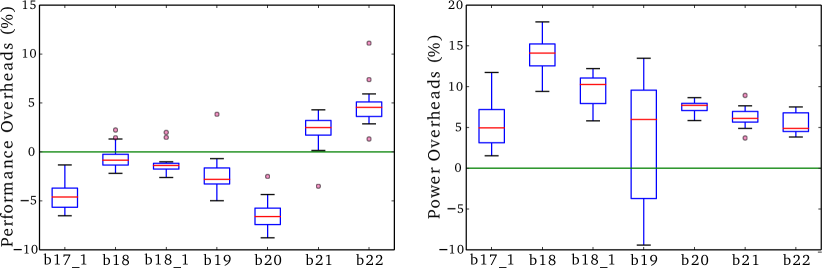
هجوم معتمد على SAT: بعد التصنيع، يستطيع المهاجم بسهولة معرفة أي أربعة مشغلات/مصارف متصلة عبر صناديق التبديل، لكنه ما يزال يحتاج إلى حل التمويه داخل صناديق التبديل نفسها. وقد يستفيد المهاجم الآن من نسخة عاملة بوصفها وحيا ويطلق هجوم SAT. ولهذه الغاية، نستخدم الهجوم المقترح في (subramanyan15, )، ونمذج المشكلة باستخدام مبدلات multiplexers كما هو موضح في (massad15, ; yu17, ). وترد النتائج التجريبية في الجدول 4. وكما هو متوقع، ينجح هجوم SAT في التصاميم الأصغر لكنه يصل إلى حد المهلة في التصاميم الأكبر. وهذه النتيجة منسجمة أيضا مع ما ذكره Xie et al. (xie17, ) لمخططهم 2.5D الموجَّه بالأمن، الذي يمتلك مفهوما أمنيا مشابها لعملنا.
7. الخلاصة والتطلعات
في البداية، نستعرض الأعمال السابقة وقيودها. ونطرح أيضا نموذجا جديدا وعمليا للتهديد في قرصنة IP ينسجم مع نماذج أعمال شركات الشرائح الراهنة. بعد ذلك، نشرح بالتفصيل كيف يكون التكامل 3D ملائما بقوة وبصورة طبيعية لجمع SM وLC. (وهذا يتيح لنا أيضا توسيع نطاق دفاع SM إلى التطبيقات التجارية العملية.) ولهذه الغاية، نقترح تدفق CAD وتصنيعا موجها بالأمن للدوائر المتكاملة ذات التكديس وجها لوجه (F2F)، وهو خيار صاعد للتكامل 3D. ونجري تجارب شاملة على مخططات فيزيائية خالية من مخالفات DRC، ونستند إلى تحليل أمني موسع لنرى أن دخول البعد الثالث واعد لحماية IP.
أما في العمل المستقبلي، فنهدف إلى طريقة أكثر صورية لتقسيم البوابات عبر الطبقات، وذلك أيضا للحماية من تهديدات أخرى مثل أحصنة طروادة العتادية. وبمعنى أوسع، نخطط لاستكشاف ما إذا كان التكامل 3D يستطيع توفير متانة ضد الهجمات الفيزيائية، مثل السبر التداخلي أو استغلال تسرب القنوات الجانبية، وكيف يمكن ذلك.
شكر وتقدير
حظي هذا العمل بدعم جزئي من مركز الأمن السيبراني (CCS) في NYU New York/Abu Dhabi (NYU/NYUAD). ونشكر أيضا Dr. Anja Henning-Knechtel على إعداد رسوم توضيحية مختارة.
References
- (1) P. Kocher et al., “Spectre attacks: Exploiting speculative execution,” in Proc. S&P, 2019.
- (2) L. Lerman et al., “Start simple and then refine: Bias-variance decomposition as a diagnosis tool for leakage profiling,” Trans. Comp., vol. 67, no. 2, pp. 268–283, 2018.
- (3) S. Bhunia, S. Ray, and S. Sur-Kolay, Eds., Fundamentals of IP and SoC Security. Springer, 2017.
- (4) M. Yasin et al., “Provably-secure logic locking: From theory to practice,” in Proc. CCS, 2017, pp. 1601–1618.
- (5) K. Shamsi et al., “On the approximation resiliency of logic locking and IC camouflaging schemes,” Trans. IFS, 2018.
- (6) J. Rajendran et al., “Security analysis of integrated circuit camouflaging,” in Proc. CCS, 2013, pp. 709–720.
- (7) X. Wang et al., “Secure and low-overhead circuit obfuscation technique with multiplexers,” in Proc. GLSVLSI, 2016, pp. 133–136.
- (8) M. I. M. Collantes, M. E. Massad, and S. Garg, “Threshold-dependent camouflaged cells to secure circuits against reverse engineering attacks,” in Proc. ISVLSI, 2016, pp. 443–448.
- (9) I. R. Nirmala et al., “A novel threshold voltage defined switch for circuit camouflaging,” in Proc. ETS, 2016, pp. 1–2.
- (10) N. E. C. Akkaya, B. Erbagci, and K. Mai, “A secure camouflaged logic family using post-manufacturing programming with a 3.6GHz adder prototype in 65nm CMOS at 1V nominal VDD,” in Proc. ISSCC, 2018, pp. 128–130.
- (11) S. Chen et al., “Chip-level anti-reverse engineering using transformable interconnects,” in Proc. DFT, 2015, pp. 109–114.
- (12) S. Patnaik et al., “Obfuscating the interconnects: Low-cost and resilient full-chip layout camouflaging,” in Proc. ICCAD, 2017, pp. 41–48.
- (13) S. Patnaik et al., “Advancing hardware security using polymorphic and stochastic spin-hall effect devices,” in Proc. DATE, 2018, pp. 97–102.
- (14) J. Rajendran, O. Sinanoglu, and R. Karri, “Is split manufacturing secure?” in Proc. DATE, 2013, pp. 1259–1264.
- (15) Y. Wang et al., “Routing perturbation for enhanced security in split manufacturing,” in Proc. ASPDAC, 2017, pp. 605–610.
- (16) S. Patnaik et al., “Concerted wire lifting: Enabling secure and cost-effective split manufacturing,” in Proc. ASPDAC, 2018, pp. 251–258.
- (17) S. Patnaik et al., “Raise your game for split manufacturing: Restoring the true functionality through BEOL,” in Proc. DAC, 2018, pp. 140:1–140:6.
- (18) Y. Wang et al., “The cat and mouse in split manufacturing,” Trans. VLSI, vol. 26, no. 5, pp. 805–817, 2018.
- (19) J. Magaña et al., “Are proximity attacks a threat to the security of split manufacturing of integrated circuits?” Trans. VLSI, vol. 25, no. 12, 2017.
- (20) A. Sengupta et al., “Rethinking split manufacturing: An information-theoretic approach with secure layout techniques,” in Proc. ICCAD, 2017, pp. 329–336.
- (21) J. Knechtel and J. Lienig, “Physical design automation for 3D chip stacks – challenges and solutions,” in Proc. ISPD, 2016, pp. 3–10.
- (22) I. A. M. Elfadel and G. Fettweis, Eds., 3D Stacked Chips – From Emerging Processes to Heterogeneous Systems. Springer, 2016.
- (23) Y. Peng et al., “Parasitic extraction for heterogeneous face-to-face bonded 3-D ICs,” Trans. CPMT, vol. 7, no. 6, pp. 912–924, 2017.
- (24) M. Jung et al., “On enhancing power benefits in 3D ICs: Block folding and bonding styles perspective,” in Proc. DAC, 2014, pp. 1–6.
- (25) D. H. Kim et al., “3D-MAPS: 3D massively parallel processor with stacked memory,” in Proc. ISSCC, 2012, pp. 188–190.
- (26) R. Radojcic, More-than-Moore 2.5D and 3D SiP Integration. Springer, 2017.
- (27) J. Knechtel et al., “Large-scale 3D chips: Challenges and solutions for design automation, testing, and trustworthy integration,” Trans. SLDM, vol. 10, pp. 45–62, 2017.
- (28) K. Chang et al., “Cascade2D: A design-aware partitioning approach to monolithic 3D IC with 2D commercial tools,” in Proc. ICCAD, 2016, pp. 130:1–130:8.
- (29) B. W. Ku, K. Chang, and S. K. Lim, “Compact-2D: A physical design methodology to build commercial-quality face-to-face-bonded 3D ICs,” in Proc. ISPD, 2018, pp. 90–97.
- (30) Y. Peng et al., “Thermal impact study of block folding and face-to-face bonding in 3D IC,” in Proc. IITC, 2015, pp. 331–334.
- (31) Tezzaron Semiconductor, “3D-ICs and integrated circuit security,” Tezzaron Semiconductor, Tech. Rep., 2008. [Online]. Available: http://tezzaron.com/media/3D-ICs_and_Integrated_Circuit_Security.pdf
- (32) J. Dofe et al., “Security threats and countermeasures in three-dimensional integrated circuits,” in Proc. GLSVLSI, 2017, pp. 321–326.
- (33) P. Gu et al., “Leveraging 3D technologies for hardware security: Opportunities and challenges,” in Proc. GLSVLSI, 2016, pp. 347–352.
- (34) F. Imeson et al., “Securing computer hardware using 3D integrated circuit (IC) technology and split manufacturing for obfuscation,” in Proc. USENIX, 2013, pp. 495–510.
- (35) Y. Xie, C. Bao, and A. Srivastava, “Security-aware 2.5D integrated circuit design flow against hardware IP piracy,” Computer, vol. 50, no. 5, pp. 62–71, 2017.
- (36) J. Valamehr et al., “A 3-D split manufacturing approach to trustworthy system development,” Trans. CAD, vol. 32, no. 4, pp. 611–615, 2013.
- (37) (2017) FreePDK: Unleashing VLSI to the Masses. Oklahoma State University. [Online]. Available: https://vlsiarch.ecen.okstate.edu/flows/
- (38) S. Borkar, “Design challenges of technology scaling,” Micro, vol. 19, no. 4, pp. 23–29, 1999.
- (39) J.-M. Lin, P.-Y. Chiu, and Y.-F. Chang, “SAINT: Handling module folding and alignment in fixed-outline floorplans for 3D ICs,” in Proc. ICCAD, 2016.
- (40) M. Jung et al., “Design methodologies for low-power 3-D ICs with advanced tier partitioning,” Trans. VLSI, vol. 25, no. 7, 2017.
- (41) R. P. Cocchi et al., “Circuit camouflage integration for hardware IP protection,” in Proc. DAC, 2014, pp. 1–5.
- (42) A. Vijayakumar et al., “Physical design obfuscation of hardware: A comprehensive investigation of device- and logic-level techniques,” Trans. IFS, vol. 12, pp. 64–77, 2017.
- (43) S.-W. Hwang et al., “A physically transient form of silicon electronics,” Science, vol. 337, no. 6102, pp. 1640–1644, 2012.
- (44) (2011) NanGate FreePDK45 Open Cell Library. Nangate Inc. [Online]. Available: http://www.nangate.com/?page_id=2325
- (45) (2018) DfX Lab, NYUAD. [Online]. Available: http://sites.nyuad.nyu.edu/dfx/research-topics/design-for-trust-split-manufacturing/
- (46) P. Subramanyan, S. Ray, and S. Malik, “Evaluating the security of logic encryption algorithms,” in Proc. HOST, 2015, pp. 137–143.
- (47) J. Jang and S. Ghosh, “A novel interconnect camouflaging technique using transistor threshold voltage,” arXiv, vol. abs/1705.02707, 2017.
- (48) J. Dofe et al., “Transistor-level camouflaged logic locking method for monolithic 3D IC security,” in Proc. AHOST, 2016, pp. 1–6.
- (49) C. Yan et al., “Hardware-efficient logic camouflaging for monolithic 3D ICs,” Trans. CS, vol. 65, no. 6, pp. 799–803, 2018.
- (50) M. E. Massad, S. Garg, and M. V. Tripunitara, “Integrated circuit (IC) decamouflaging: Reverse engineering camouflaged ICs within minutes,” in Proc. NDSS, 2015, pp. 1–14.
- (51) C. Yu et al., “Incremental SAT-based reverse engineering of camouflaged logic circuits,” Trans. CAD, vol. 36, no. 10, pp. 1647–1659, 2017.